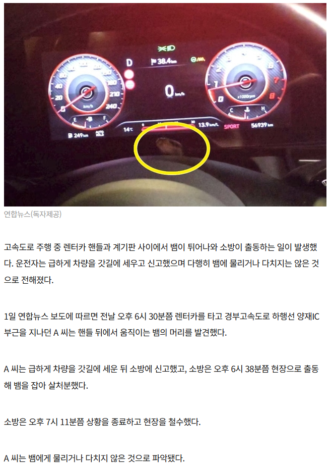

뱀도 같이 렌트해줌

뱀도 같이 렌트해줌
와 어디를 통해 어디로 들어가있다가 저기서 튀어나온 거지
바로 전에 차량 사용한 차주부터 찾아 족쳐야 할듯
뱀은 앞유리 송풍구나 엔진룸 통해서 실내로 쉽게 들어갈수있는데
전 차주 족쳐서 뭐하게?
시발 ㅈㄴ 무섭다 ....
막는법 없나요..?
ㅇㅇ 송풍구도 바람이 통해야지 뭘어케막게
그건 족치고 나서 생각해야지
펠라
사고 안난게 다행임
종료(안락사)
따뜻해서 기어들어갔네
이전에 렌트한 사람이 어디 으슥한 산길에 들어가서 장시간 주차하기라도 했던건가..
추운 날씨에 따뜻한곳 찾아 기어들어간거일텐데 뒈짖당했네
사고 안당한게 다행이네...
잘못하면 깝놀해서 어디 박았을지도 ㅎㄷㄷ
구래도 저기서 나와서 다행인거아니냐 보이지도않는데서 물어버렸으면 클날뻥햇네..
근데 ㅋㅋㅋ 저기서 빼꼼하고잇는거 좀 귀엽네
좀 불쌍하긴하다
뀨